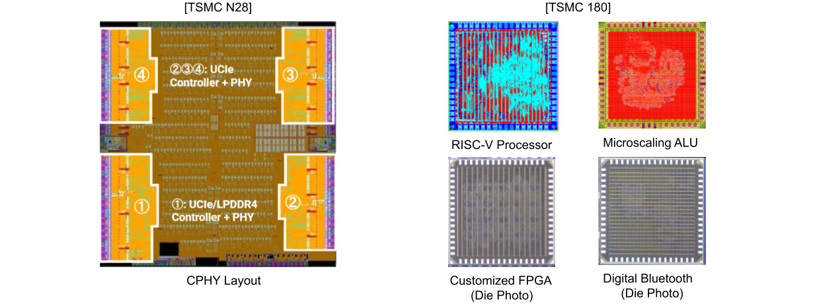
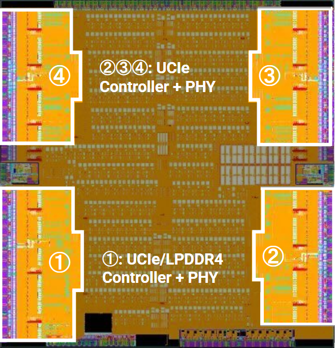
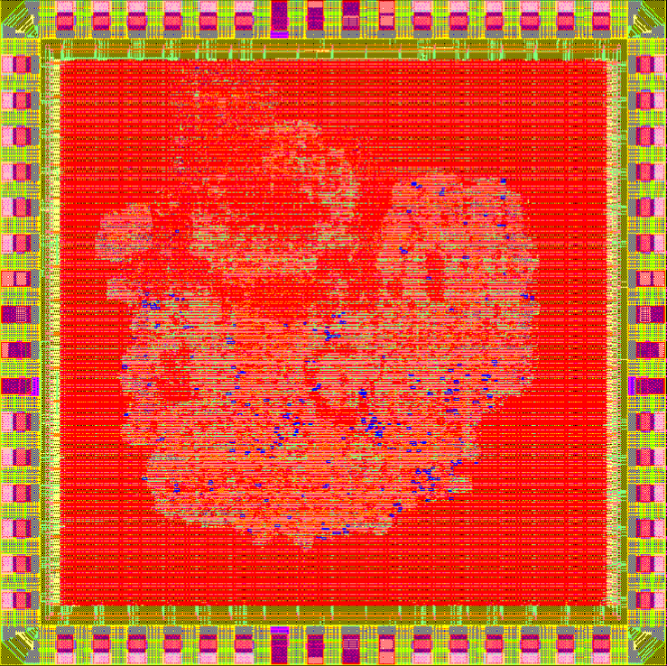
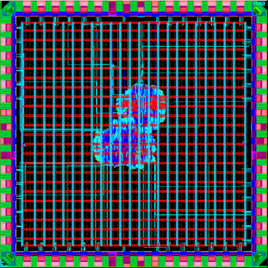
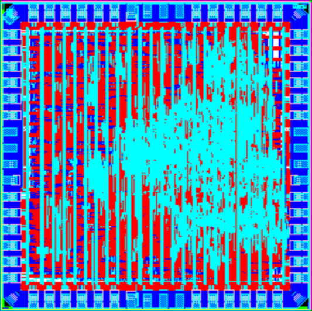
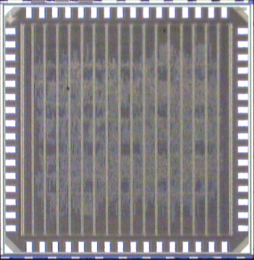

AI & General-Purpose Architecture
Computer architecture for AI and general-purpose workloads across CPUs, GPGPUs, and accelerators.
Ph.D. Student · Computer Engineering
I design computer architectures for AI and general-purpose computing — spanning CPUs, GPGPUs, and reconfigurable spatial/dataflow fabrics (FPGA/CGRA), with cross-stack co-design from RTL and silicon to compilers and AI systems.
Computer architecture for AI and general-purpose workloads across CPUs, GPGPUs, and accelerators.
Reconfigurable and spatial/dataflow architectures — FPGA and CGRA — for efficient, flexible execution.
Memory systems, cross-stack co-design, and multimodal AI systems for real-world applications.
GPA 4.00 · Computer architecture, reconfigurable architecture, AI systems, digital VLSI · Advisors: Prof. Ang Li & Prof. C.-J. Richard Shi
GPA 4.00 · Computer architecture, digital VLSI
GPA 3.70 · Power electronics, embedded systems
GPA 4.00
Jiayi Wang highlighted in bold. See GitHub for code and the full CV.
DICE: Enabling Efficient General-Purpose SIMT Execution with Statically Scheduled Coarse-Grained Reconfigurable Arrays
ISCA 2026 Int'l Symposium on Computer Architecture, Raleigh, NC · Jun–Jul 2026 · 19.1% acceptance
TransDot: An Area-Efficient Reconfigurable Floating-Point Unit for Trans-Precision Dot-Product Accumulation for FPGA AI Engines
FCCM 2026 IEEE Int'l Symp. on Field-Programmable Custom Computing Machines, Atlanta, GA · May 2026 · 24.6% acceptance
DICE: Efficient Thread-Pipelined SIMT Execution on a Statically Scheduled Reconfigurable Spatial Fabric
GPGPU 2026 18th Workshop on General Purpose Processing Using GPU, w/ ASPLOS 2026, Pittsburgh, PA · Mar 2026
piPE-SA: Enabling Deeply Pipelined Processing Elements in Systolic Arrays
EMC²-11 Energy Efficient ML and Cognitive Computing Workshop, w/ ASPLOS 2026, Pittsburgh, PA · Mar 2026
Hybrid Aerial-Aquatic Vehicle for Large-Scale High-Spatial-Resolution Marine Observation
OCEANS 2019 Marseille · pp. 1–7
All-Digital Bluetooth Low Energy (BLE) Backscatter ASIC Using Standard I/O Pad Drivers in 180nm CMOS
RFID 2026 IEEE Int'l Conference on RFID
CacheFlex: Explicitly Control What You Need in Your Cache
EMC²-11 w/ ASPLOS 2026, Pittsburgh, PA · Mar 2026
STEP: Spatially Threaded Execution Pipeline
LATTE 2026 6th Workshop on Languages, Tools, and Techniques for Accelerator Design, w/ ASPLOS 2026
Precision-Aware Communication in CGRAs
FCCM 2026 IEEE Int'l Symp. on Field-Programmable Custom Computing Machines
DICE: Enabling Efficient General-Purpose SIMT Execution with Coarse-Grained Reconfigurable Arrays
Patent U.S. Provisional Application 64/012,051 · filed Mar 20, 2026
An Aerial-Aquatic Vehicle Combining a Fixed-Wing Aircraft and a Glider
Patent Chinese Invention Patent CN 109204812 B · granted Nov 17, 2020
Reconfigurable tensor arrays for multiprecision AI and general-purpose computing.
A multimodal AI system for early-childhood classrooms enabling automated interaction-quality scoring and low-latency teacher coaching.
An energy-efficient GPGPU that replaces the SIMD backend with statically scheduled CGRAs.
A highly parameterized CGRA RTL generation framework for rapid architecture exploration.
Memory controller and high-speed PHY taped out in TSMC N28.
Investigated architectural optimizations in commercial GPGPU/NPU platforms for sparse matmul; explored sparse flows in TensorRT, PyTorch, and CUTLASS using NVIDIA 2:4 Sparse Tensor Cores; benchmarked across ResNet, MobileNet, and BERT.
Developed C++ automation tools for automatic SystemVerilog model generation of analog circuits.
Debugged and verified DDR and PCIe high-speed interfaces on IA-32 platform products.
Worked on a dual-mode self-adaptive LED/HID driver circuit for the EU market.
A selection of die shots from tape-outs and prototypes I've contributed to.






Courses: EE478 Chip Testing & VLSI Capstone, EE477/525 VLSI-II, EE476 VLSI-I, EE271 Digital Circuits. Led and mentored 5 TSMC180 tape-out projects. Built a complete ASIC tape-out flow for TSMC 180nm using the Hammer flow with custom TCL plugins. Implemented and maintained synthesis (Genus), P&R (Innovus), STA (Tempus), DRC/LVS (Calibre), padframe generation, and hierarchical flows with extracted timing models.
Reviewed master's applicant materials and provided evaluation feedback.
Contributed to student community activities in semiconductor design and systems research.
AI hardware; CPU/GPGPU/FPGA/CGRA architecture; GPGPU-Sim/GPUWattch (Accel-Sim/AccelWattch); gem5.
End-to-end design, tape-out & mentoring in TSMC 180nm and N28 — RTL, verification, synthesis, P&R, STA, signoff (DRC/LVS/PEX).
Cadence (Xcelium, Genus, Innovus, Tempus), Synopsys, Mentor/Calibre.
CUDA, Python, C++, SystemVerilog; strong debugging on complex codebases.
Happy to chat about computer architecture, reconfigurable computing, AI systems, or collaborations.